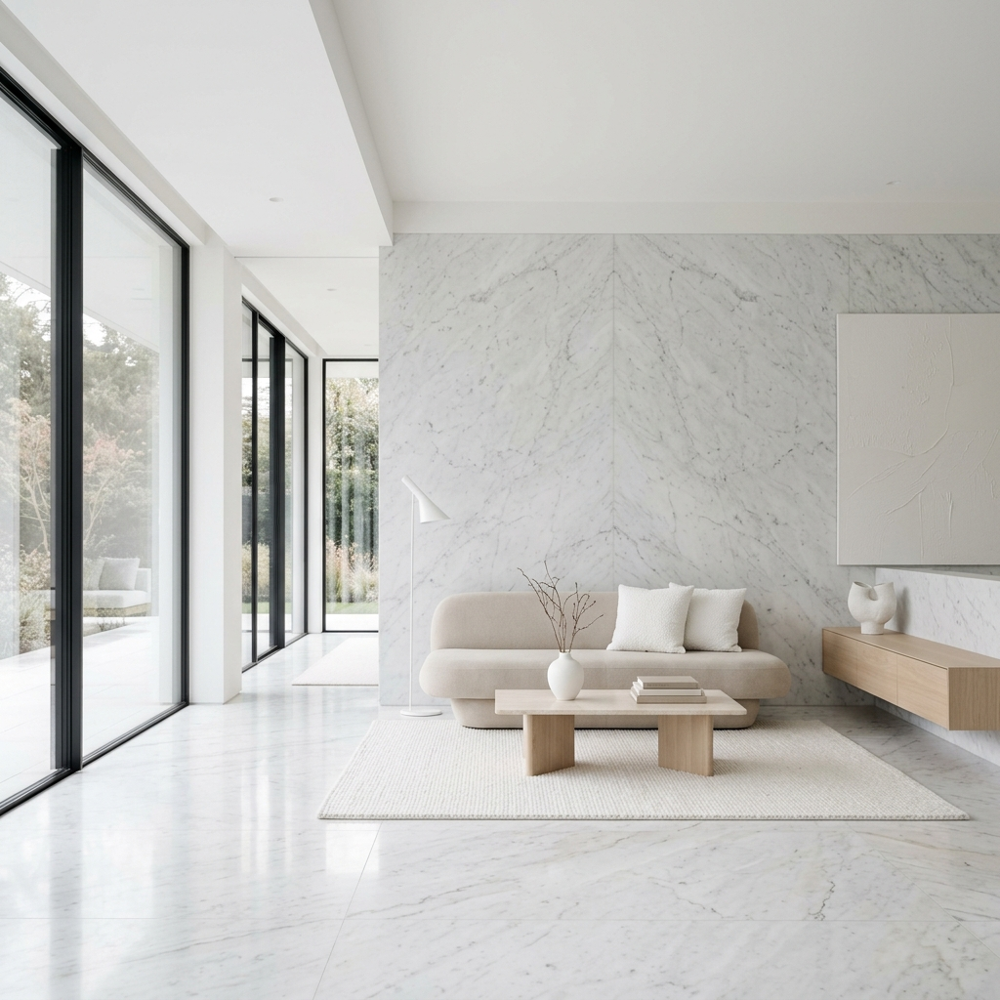
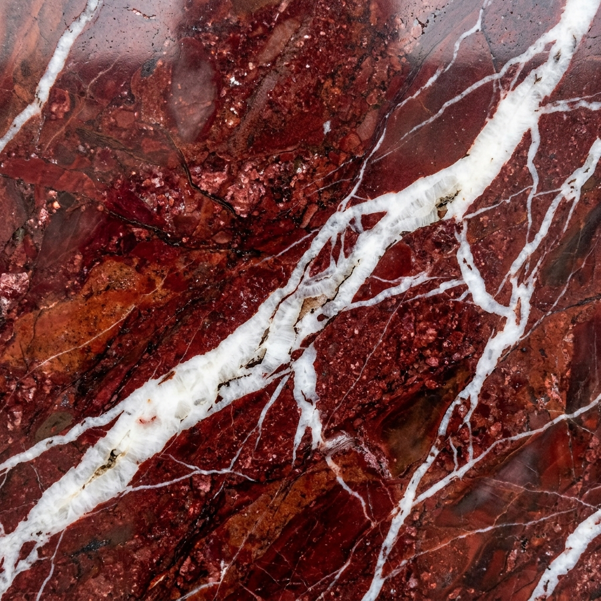
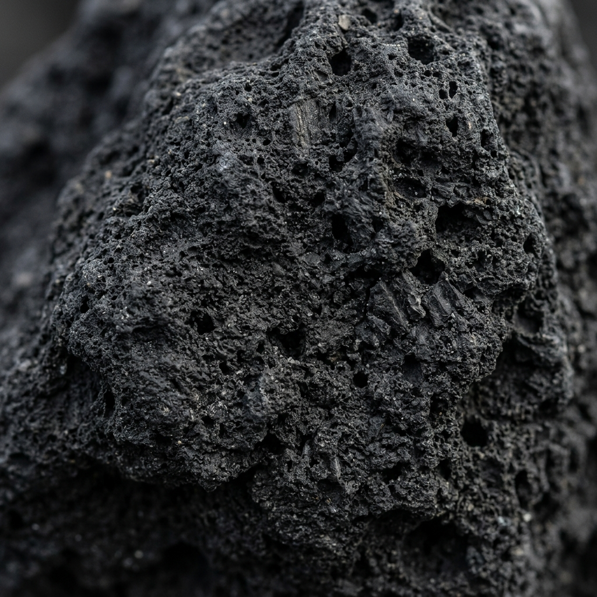
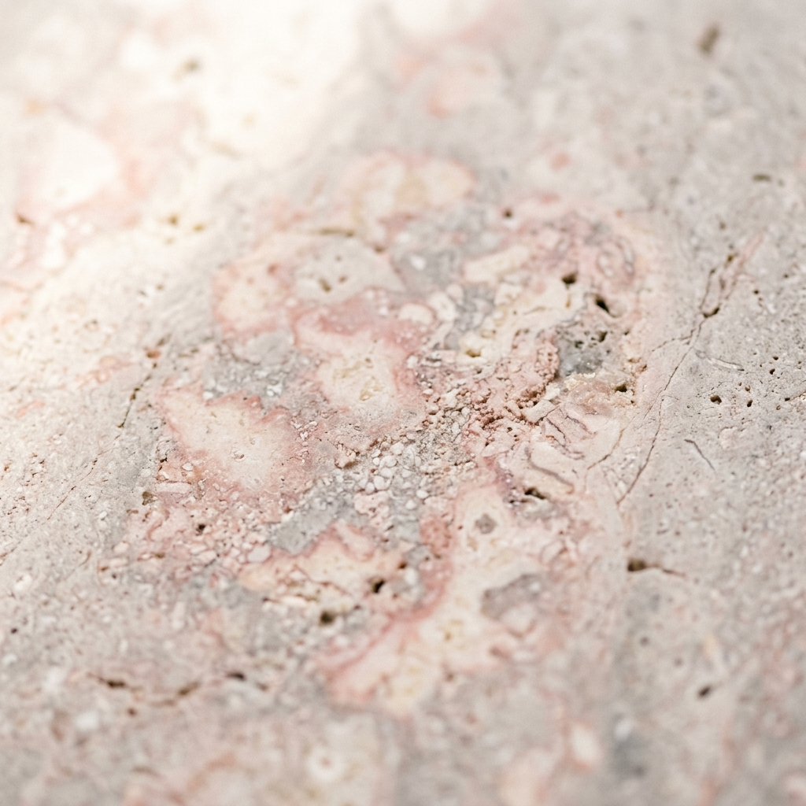

Dalle cave siciliane alle architetture contemporanee. Estraiamo la pietra naturale per i progetti più prestigiosi al mondo con un approccio essenziale e minimale.

Intensità cromatica e venature decise.

Basalto vulcanico dall'Etna. Puro e materico.

Morbidezza calcarea e calore mediterraneo.